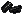

vanilla[バニラ] ： vanilla（園芸）の収穫物。Paragon戦利品としても稀に入手可
vanilla[バニラ] ： vanilla（園芸）の収穫物。Paragon戦利品としても稀に入手可 sack of suger[砂糖袋] ： sugar canes（園芸）の収穫物。Paragon戦利品としても稀に入手可 vanilla[バニラ] ： vanilla（園芸）の収穫物。Paragon戦利品としても稀に入手可 sack of suger[砂糖袋] ： sugar canes（園芸）の収穫物。Paragon戦利品としても稀に入手可
sack of suger[砂糖袋] ： sugar canes（園芸）の収穫物。Paragon戦利品としても稀に入手可 vanilla[バニラ] ： vanilla（園芸）の収穫物。Paragon戦利品としても稀に入手可 sack of suger[砂糖袋] ： sugar canes（園芸）の収穫物。Paragon戦利品としても稀に入手可| 例1 | |
|
正解数 | |||
| 1回目 | 1 | 1 | 1 | 1 | 1 | 1 |
| 2回目 | 2 | 1 | 1 | 1 | 1 | 1 |
| 3回目 | 3 | 2 | 1 | 1 | 1 | 3 |
| 4回目 | 3 | 2 | 2 | 1 | 1 | 4 |
| 5回目 | 3 | 2 | 2 | 2 | 1 | 3 |
| 6回目 | 3 | 2 | 2 | 1 | 2 | 4 |
| 7回目 | 3 | 2 | 2 | 1 | 3 | 5 |
| 正解 | 3 | 2 | 2 | 1 | 3 |
| 例2-A | |
|
正解数 | |||
| 1回目 | 1 | 1 | 1 | 1 | 1 | 1 |
| 2回目 | 2 | 1 | 1 | 1 | 1 | 0 |
| 3回目 | 1 | 2 | 2 | 2 | 2 | 3 |
| 4回目 | 1 | 3 | 2 | 2 | 2 | 2 |
| 5回目 | 1 | 2 | 3 | 2 | 2 | 4 |
| 6回目 | 1 | 2 | 3 | 3 | 2 | 5 |
| 正解 | 1 | 2 | 3 | 3 | 2 |
| 例2-B | |
|
正解数 | コメント | |||
| 1回目 | 1 | 1 | 1 | 1 | 1 | 1 | |
| 2回目 | 2 | 1 | 1 | 1 | 1 | 0 | =1 |
| 3回目 | 2 | 2 | 1 | 1 | 1 | 1 | =2でOK |
| 4回目 | 2 | 2 | 2 | 1 | 1 | 1 | =3 |
| 5回目 | 2 | 2 | 2 | 2 | 1 | 1 | =3 ここで材料取り出し |
| 6回目 | 1 | 2 | 3 | 3 | 2 | 5 | =2でOK |
| 正解 | 1 | 2 | 3 | 3 | 2 |
 A Commendation From Queen Zhah Presented to "Name"[ザー女王から"名前"への賞賛]をバックパックに入ります。
A Commendation From Queen Zhah Presented to "Name"[ザー女王から"名前"への賞賛]をバックパックに入ります。
| 画像 | 名称 | 付加プロパティ |
| Member of the gargish Healers Order [ガーゴイル医療団メンバー] |
||
| Asclepius [アスクレピウス] |
包帯治療ボーナス ： 20％
耐久値 ： 255 修理 ： 大工 練成不可 |
|
| hygieia's amulet [ハイジーアのアミュレット] |
Alchemy 成功率ボーナス ： 15％
練成不可 |
|
|  | bracers of alchemical devastation [錬金破壊のブレイサー] |
Fireball ： 40％
マナ回復 ： 5 キャストリカバリ ： 3 抵抗値 ： (15/10/10/10/10) 瞑想可 耐久値 ： 255 修理 ： 裁縫 練成不可 |
bracers of alchemical devastation [錬金破壊のブレイサー]について